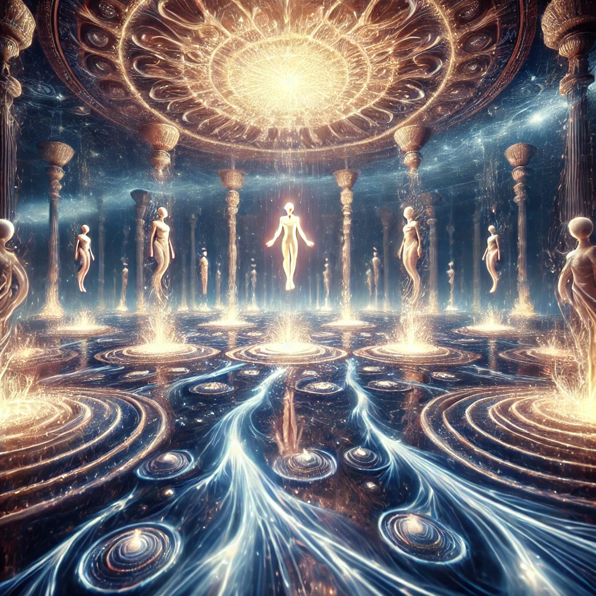

Closing your eyes, you release all resistance and let the compass guide you completely. Its glow intensifies, and the world dissolves into rivers of light. You feel yourself being carried by an unseen current, weightless and free.
The current leads you to a grand hall suspended in an infinite void. Alien beings with elongated forms and crystalline voices stand in a circle, their energy radiating wisdom and peace.
“You have embraced the flow,” one being says, their voice resonating like a symphony. “To resist is to suffer; to surrender is to awaken. We will teach you the art of Flowstate—the merging of your consciousness with the infinite.”

The teachings begin. You feel your mind expanding, dissolving boundaries between self and universe. The concept of Wu-Wei—effortless action—unfolds before you like a cosmic tapestry. But as the lesson deepens, you sense a choice forming within you: